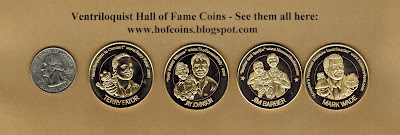

Hall of Fame Coins...
7/7/2012
I just received this comment from Bob Steininger which I would like to share. Then I will have a couple comments of my own.
"Clinton, I just received my 2nd set of framed coins. What can I say? Once again, they are top notch, first class, well made, look great. Trust me when I say, 'once you buy a set and see the workmanship and details you will want another set.' What an honor to see past and present vents on the coins. I do hope to see a coin in your honor for all you do for the vent world, and I would like to thank you for that."
First of all, thank you, Bob, for your words of praise for the coins! I do hope others follow your suggestion to purchase the second set (2012-B). I truly believe their quality is "investment worthy". Thus far, only about half of those who purchased set #1 have purchased set #2 which has me a bit puzzled, and even more so considering the enthusiastic promotion the honorees themselves have given the coins. Candidly, the slow purchase response does not bode well for the future fate of the project...but I'll be patient.
"Clinton, I just received my 2nd set of framed coins. What can I say? Once again, they are top notch, first class, well made, look great. Trust me when I say, 'once you buy a set and see the workmanship and details you will want another set.' What an honor to see past and present vents on the coins. I do hope to see a coin in your honor for all you do for the vent world, and I would like to thank you for that."
First of all, thank you, Bob, for your words of praise for the coins! I do hope others follow your suggestion to purchase the second set (2012-B). I truly believe their quality is "investment worthy". Thus far, only about half of those who purchased set #1 have purchased set #2 which has me a bit puzzled, and even more so considering the enthusiastic promotion the honorees themselves have given the coins. Candidly, the slow purchase response does not bode well for the future fate of the project...but I'll be patient.
 |
| http://www.hofcoins.blogspot.com |
{kind=link}
Second, I'm honored that you suggest a Clinton Detweiler coin be minted, and you are not the first to suggest such. However, in addition to providing a unique and enduring prized collectible, one of the primary purposes for the coins is to thank and show appreciation to those ventriloquists who have inspired, influenced, and assisted my own ventriloquist career. So I will continue with that theme for the foreseeable future (assuming the project has a future as noted above).